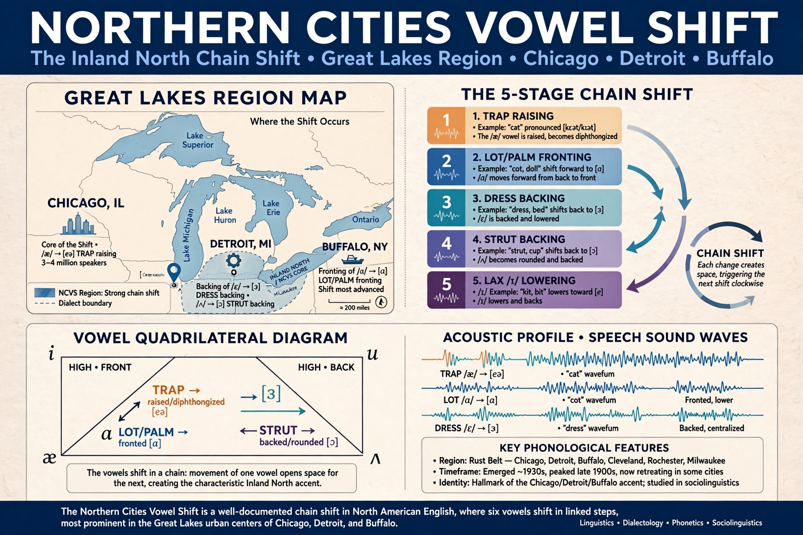

The Northern Cities Vowel Shift (NCVS), also called the Northern Cities Shift, is a chain shift in the vowels of Inland Northern American English, spoken around the Great Lakes in cities such as Chicago, Detroit, Cleveland, Buffalo, Milwaukee and Rochester.

Documented by William Labov and colleagues, the shift involves six vowels: /æ/ raises and fronts (so bat approaches bet), /ɑ/ fronts, /ɔ/ lowers, /ɛ/ backs, /ɪ/ lowers/backs, and /ʌ/ backs. It is one of the largest ongoing sound changes in North American English and defines a dialect region distinct from neighbouring Midland speech.
The shift is strongest in white urban speakers and correlates with the industrial Great Lakes corridor formed in the era of the Erie Canal. Recent research finds retreat in some cities. See Social norm, American English, Sociolinguistics.